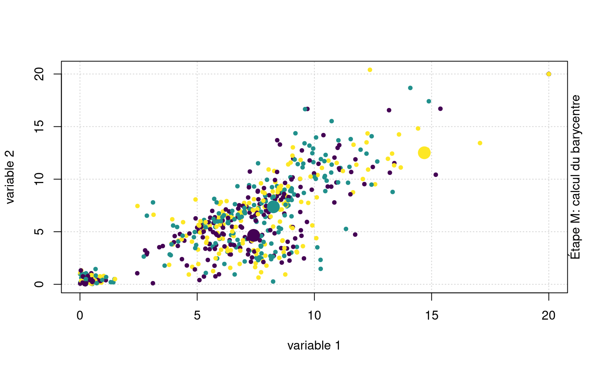
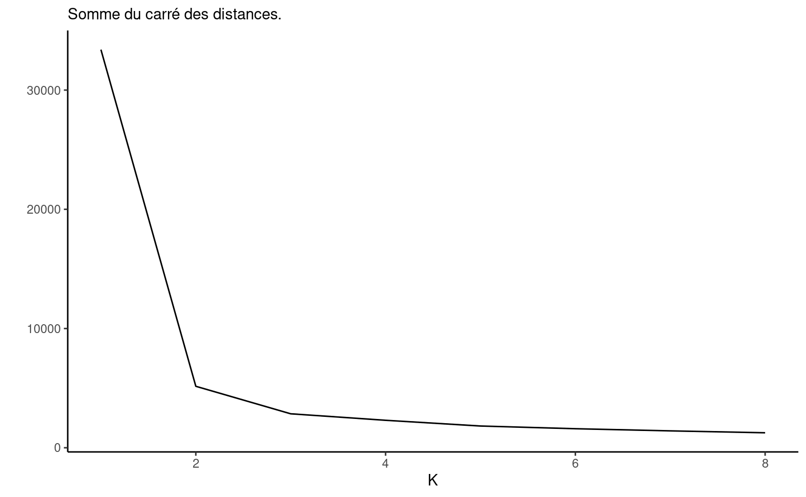
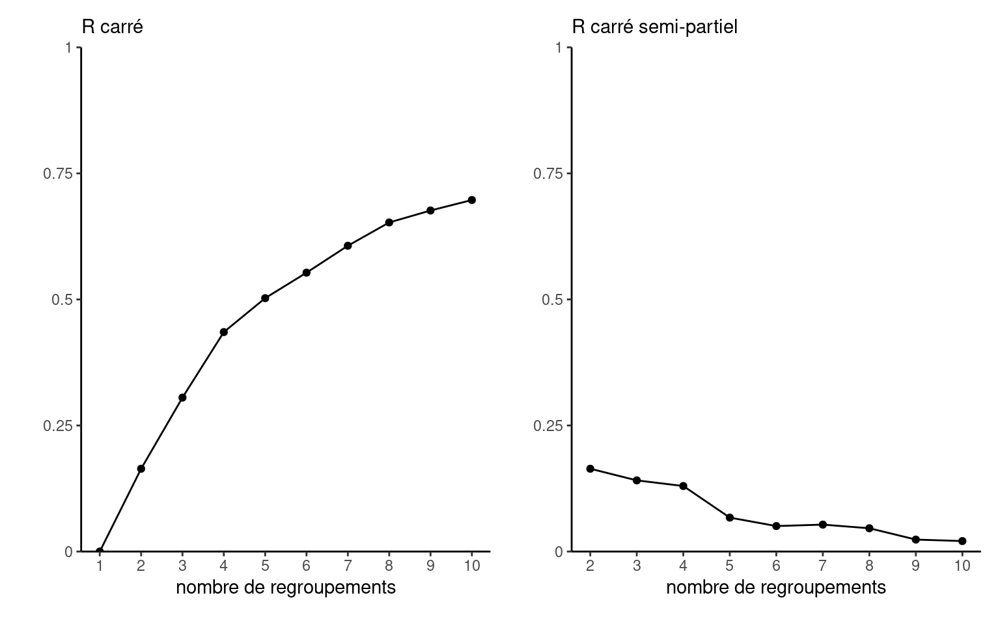
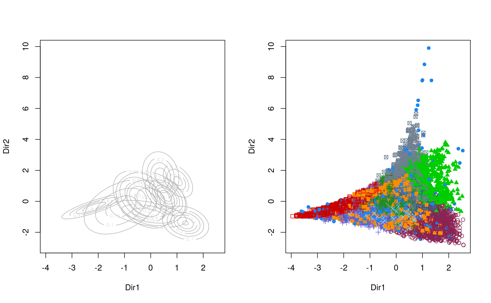
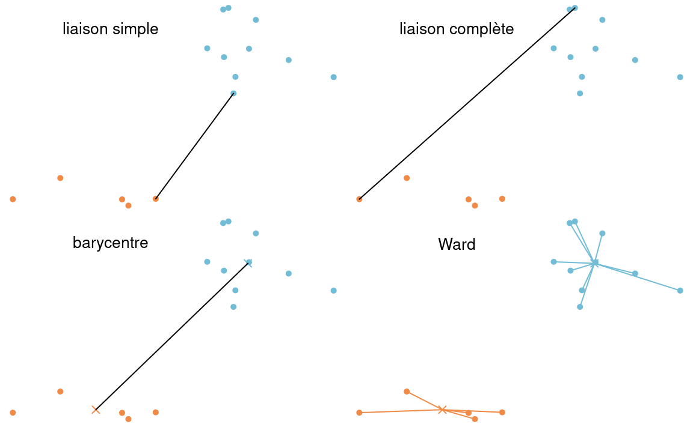
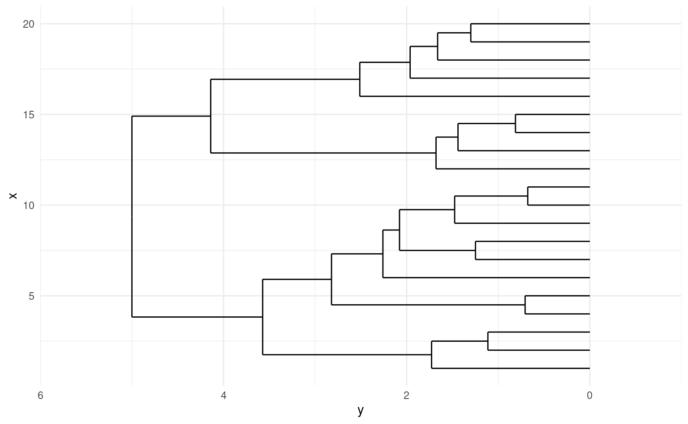

| variable | moyenne | écart-type | min | max | manquant |
|---|---|---|---|---|---|
| ndons | 5.13 | 5.21 | 1 | 27.0 | 0 |
| recence | 86.41 | 81.80 | 2 | 299.0 | 0 |
| anciennete | 168.72 | 95.77 | 2 | 302.0 | 0 |
| vdons | 117.66 | 431.08 | 1 | 19260.0 | 0 |
| vdonsmax | 30.72 | 88.13 | 1 | 2460.0 | 0 |
| vdonsmin | 10.98 | 28.79 | 1 | 1570.0 | 0 |
| npromesse | 1.72 | 2.37 | 0 | 15.0 | 0 |
| vpromesse | 61.32 | 282.07 | 0 | 12680.0 | 0 |
| nradiations | 0.52 | 0.89 | 0 | 10.0 | 0 |
| vradiations | 28.09 | 141.47 | 0 | 11815.0 | 7142 |
| ddons | 2.13 | 1.94 | 0 | 23.9 | 5736 |
| ddonsmax | 3.85 | 3.24 | 0 | 23.9 | 5736 |
| ddonsmin | 1.32 | 1.83 | 0 | 23.9 | 5736 |
| nrefus | 2.18 | 2.26 | 0 | 11.0 | 0 |
| nrefusconsec | 1.56 | 2.06 | 0 | 11.0 | 0 |
| nindecis | 0.47 | 0.93 | 0 | 8.0 | 0 |
7 Analyse de regroupements
7.1 Introduction
Si la publicité ciblée personnalisée a pris de l’essort ces derniers années en commercialisation, la segmentation de consommateurs reste une partie prenante essentielle de toute campagne de publicité ou de développement de produits.
L’analyse de regroupement est une technique d’analyse descriptive qui sert à combiner des sujets en groupes de telle sorte que les individus d’un même groupe soient le plus semblables possible et que les groupes soient le plus différent possible les uns des autres, avec des valeurs aberrantes clairement identifiées. Cette similarité est définie selon des caractéristiques provenant de variables explicatives. Le résultat de l’analyse de regroupement sera une étiquette associée à chaque observation l’assignant à un regroupement ou l’identifiant comme aberrance, nous permettant ainsi de caractériser par le biais de statistiques descriptives les différents segments obtenus.
Il y a une certaine analogie avec l’analyse factorielle. En analyse factorielle, on cherche à déterminer s’il y a des groupes de variables corrélées entre elles et à les regrouper pour réduire le nombre de variables. En analyse de regroupements, on cherche plutôt à créer des groupes d’observations similaires. Les deux méthodes servent pour l’analyse exploratoire ou descriptive.
Pour créer les regroupements, on utilisera \(p\) variables explicatives \(X_1, \ldots, X_p\) pour chacune des \(n\) observations, où \(X_{ij}\) dénotera la valeur de la \(j\)e variable explicative pour le \(i\)e sujet.
Étapes d’une analyse de regroupements
- Choisir les variables pertinentes à l’analyse. Cette étape peut nécessiter de créer, transformer de nouvelles variables ou d’aggréger les données.
- Décider quel méthode sera utilisée pour la segmentation.
- Choisir les hyperparamètres de l’algorithme (nombre de regroupements, rayon, etc.) et la mesure de dissemblance.
- Valider la qualité de la segmentation (interprétabilité, taille des groupes, homogénéité des regroupements).
- Avec les étiquettes, calculer un prototype de groupe.
- Interpréter les regroupements obtenus à partir des prototypes
7.2 Données
Voici en vrac quelques exemples de bases de données sur lesquelles on pourrait effectuer une analyse de regroupements.
Les programmes de fidélisation font partie de la stratégie de commercialisation de plusieurs grandes chaînes (pharmacies, épiceries): en échange de rabais et d’offres promotionnelles, la clientèle fournit des informations sociodémographique (nom, adresse, date de naissance, etc.) et utilise un identifiant numérique, une carte ou une application pour inscrire chaque achat: ce faisant, le système peut traquer les habitudes de consommation.1 Créer des regroupements permet de mieux cerner les besoins et habitudes de segments de consommateurs et ainsi d’adapter l’offre promotionnelle. Les algorithmes utilisés pour l’analyse de regroupements peuvent également servir à la résolution d’entité, qui consiste à fusionner les profils de bases de données sans identifiant unique client.
Un autre exemple d’application de l’analyse de regroupements est la segmentation de la clientèle de transport en commun. Dans la région métropolitaine de Montréal, l’Agence régionale de transport métropolitain recueille des informations sur les passages et transactions par le biais des cartes à puce Opus (achat de passes mensuelles ou de billets unitaires, lieu de l’achat, etc.) ainsi que les passages (heure, type de véhicule, emplacement approximatif pour les services d’autobus ou station de métro). En créant des regroupements, une agence de transport peut ainsi ajuster son offre et proposer des abonnements ou des produits qui reflètent les besoins de sa clientèle. Un exemple extrême de traquage de compagnie de transport est Nederlandse Spoorwegen (NS): toute personne qui veut voyager en train sur les chemins de fers néerlandais doit acheter une carte à puce et la charger, en plus de composter son billet au départ et à l’arrivée de son voyage. Cette approche, qui peut sembler intrusive, permet néanmoins de mesurer précisément la demande sur les lignes en fonction du moment de la journée et de l’associer à chaque client.
Souvent, les bases de données marketing sont souvent de nature longitudinale: chaque ligne correspond à une transaction, mais plusieurs d’entre elles peuvent être le fait d’une même personne/compte. Une fois l’analyse exploratoire des données complétée, on procédera à l’aggrégation des observations par compte client, puisque la segmentation doit être effectuée à cette échelle. C’est également à ce stade qu’on pourra créer de nouvelles variables explicatives à partir de l’information présente dans la base de données: par exemple, on pourrait considérer la fréquence moyenne d’achat, le montant moyen par transaction, le mode du moment de la journée, la variabilité de cette fréquentation, le pourcentage des ventes provenant d’articles en solde, la variabilité du montant du panier, etc. Cette liste, non exhaustive, illustre l’étape cruciale de l’extraction de l’information utilisée dans l’analyse statistique: il faut être conscients que la qualité de la segmentation dépend du choix de variables employées.
Il y a une pléthore d’exemples d’analyse de regroupements. Par exemple, les articles suivants de science politique utilisent les résultats d’élections passées ou de sondages pour établir typologie des électeurs français suite à la présidentielle, une segmentation de quartiers de Los Angeles et de New York selon leur vote ou le profils des électeurs albertains. Ce travail de maîtrise se penche de son côté sur le positionnement de joueurs lors de match de la NBA.
7.3 Choix des variables
L’analyste est libre de choisir quelles variables seront incluses dans le modèle. Le choix des variables est important: en général on veut créer des groupes d’individus qui sont homogènes par rapport à certains aspects de leur comportement ou de leur situation. On ne doit alors inclure que les variables pertinentes à cet aspect. Inclure de nombreuses variables pour lesquelles il y a une forte similitude entre individus contribue à diluer les différences.
Par exemple, si le but de l’analyse est de segmenter nos clients selon leurs habitudes de consommation (genre de boutiques fréquenté, fréquence, etc.), on n’inclura pas des variables démographiques qui feraient ressortir les différences de genre, d’âge, de revenu, etc. En fait, souvent l’analyse de regroupements servira justement à créer des groupes qui seront comparés par rapport à d’autres variables qui n’ont pas été utilisées pour créer les groupes.
La compréhension de la base de données est cruciale pour comprendre le comportement. Si on essaie de faire une segmentation du comportement d’utilisateurs et utilisatrices de transports en commun à partir d’informations auxiliaires comme le temps de passage, le nombre de correspondance et la fréquence d’utilisation, il peut être utile de créer de nouvelles variables (par exemple, une variable indicatrice qui indique si la personne voyage durant les heures de traffic entre 7h30 et 9h et 16h à 18h, le nombre hebdomadaire moyen de jours ouvrables pendant lesquels elle se déplace, etc). L’inclusion des ces variables auxiliaires peut augmenter la qualité de la segmentation.
Pour voir si certaines variables sont inutiles, il peut être utile de comparer les représentants des groupes (par exemple, le barycentre ou une observation lambda du groupe) pour voir si les moyennes ou caractéristiques diffèrent. Si ce n’est pas le cas, on pourrait envisager de recommencer la procédure en enlevant cette variable.
Si on a un nombre important de variables explicatives à disposition, il est parfois utile de réduire préalablement la dimension (par exemple, en effectuant une analyse en composantes principales) et à ne retenir que les premières composantes pour faciliter la tâche. Cette approche n’est pas la panacée: quelquefois, cette réduction de la dimension masque les différences entre groupes et mène à une segmentation inférieure à l’utilisation des variables originales.
Malheureusement, il n’est pas évident de prime abord de déterminer quelles variables inclure dans la base de données pas plus qu’il n’est facile de juger de la qualité d’une segmentation ou du nombre de regroupements à effectuer. Les choix individuels auront un impact certain sur les regroupements obtenus: on recommande d’essayer plusieurs alternatives et de vérifier graphiquement ou à l’aide de critères d’ajustement si les regroupements obtenus sont homogènes et compacts.
Si certaines variables définissent naturellement des groupes, par exemple l’âge des personnes, et fait qu’ils et elles ont des caractéristiques intrinsèquement différentes, il peut être utile de faire une segmentation indépendamment pour chacun de ces sous-groupes.
Dans ce chapitre, nous utiliserons des données simulées inspirées de campagnes de financement d’organismes de charité. Ces dernières font souvent du démarchage publicitaire auprès de donateurs ou envoient par publipostage des demandes de dons à toutes les adresses postales. Ces efforts ont un coût important: nous essaierons de créer des catégories de donateurs afin de mieux cibler les donateurs et donatrices et le moment adéquat pour ce démarchage. Plusieurs grandes compagnies sont associées à ces organismes et les parrainent: notre base de données contiendra le profil de toutes ces personnes, qu’elles fassent un don ou pas.
La base de données dons contient 19353 observations pour 16 variables: le Tableau 7.1 fournit les statistiques descriptives. Elle a été crée en regroupement les identifiants: de nombreuses variables explicatives sont dérivées des données brutes, notamment le temps entre dons, les statistiques descriptives (montant moyen, minimum maximum) pour les dons monétaires. Ces choix de variables sont loins d’être anodins et peuvent influencer la segmentation décrite dans ce chapitre. Une rapide exploration des données révèle que près de 0% des employé(e)s n’ont pas donné à l’organisme. Une poignée de dons sont très élevés, mais la plupart des montants tourne autour de 5$, 10$, 20$, etc.
La grande proportion de données manquantes pose un problème immédiat pour la segmentation, puisque la plupart des procédures ne permettent pas de traiter ces dernières et éliminent d’office les observations correspondantes de la base des données. Ici, plusieurs valeurs manquantes (NA) peuvent être logiquement remplacées par des valeurs numériques: par exemple, la valeur cumulative des dons (vdons) d’une personne qui n’a jamais donné est nulle.2 En revanche, le temps d’attente entre deux dons pour une personne qui a fait un don ou moins n’est pas bien défini.
Si on essaie de créer manuellement des groupes, il apparaît logique de séparer en trois segments initiaux la base de données: les personnes qui n’ont jamais donné à l’organisme de charité mais dont les caractéristiques sont connues, les personnes qui ont fait un seul don et celles qui ont fait des dons multiples. Un algorithme ferait de toute façon vraisemblablement ressortir cette information, mais nous empêcherait d’exploiter pleinement l’ensemble des variables explicatives et de ses dérivées. On pourra effectuer la segmentation séparément sur chaque groupe avec en intrant des variables explicatives différentes.
Les intrants de l’analyse de regroupement (soit le choix des variables) est laissé à la discrétion de l’analyste. Dans notre exemple, on pourrait aisément créer de nouvelles variables pour faire ressortir des informations jugées pertinentes. Est-ce qu’on s’intéresse au montant moyen des dons, soit vdons/ndons? Est-ce que la valeur des radiations nous intéresse, ou bien devrait-on plutôt considérer le pourcentage de la valeur promise réalisée?
On considère ci-dessous l’ensemble des personnes qui ont fait plusieurs dons. On modifie certaines variables explicatives pour réduire la corrélation entre variables et obtenir des variables plus évocatrices: le montant moyen de dons, le nombre de refus relatif à l’ancienneté du donateur ou de la donatrice et finalement la valeur de la promesse moyenne, si applicable (zéro sinon). Plusieurs variables (délais minimum et maximum entre dons, valeurs minimum, radiations, etc.) sont également abandonnées pour simplifier l’exposition et pour éviter qu’elles ne ressortent indûment. On voit également que plusieurs valeurs de radiations sont manquantes: cette variables est éliminée d’office.
donsmult <- dons |>
filter(ndons > 1L) |>
mutate(mtdons = vdons/ndons,
snrefus = nrefus/anciennete*mean(anciennete),
mpromesse = case_when(
npromesse > 0 ~ vpromesse/npromesse,
TRUE ~ 0)) |>
select(!c(
vradiations, # valeurs manquantes
nindecis, vdons, ddonsmax,
ddonsmin, vdonsmin, npromesse,
vpromesse, nrefus, nradiations)) |>
relocate(mtdons)Le champ des applications de l’analyse de regroupements est parfois surprenant. Par exemple, cet article de FiveThirtyEight propose une segmentation des électeurs démocrates new-yorkais ou des quartiers de Los Angeles. Un autre exemple incongru est la compression d’images: la Figure 7.1 montre une image du bâtiment Decelles (coin supérieur gauche) et la reconstruction avec trois, quatre et 10 couleurs obtenues en appliquant l’algorithme des \(K\)-moyennes sur la matrice formée par les valeurs des canaux (rouge, vert, bleu) de l’image.

7.4 Mesures de dissemblance
Comment mesurer si deux observations appartiennent à un même regroupement et sont similaires? Idéalement, on aimerait avoir une situation comme dans la Figure 7.2 où les regroupements sont clairement visibles. On aimerait que la similarité entre observations d’un même groupe, ou intra-groupe, soit élevée et que la similarité entre groupe soit faible. Les regroupements devraient être éloignés les uns des autres, tandis que les observations au sein de ces regroupements devraient être proches. Dans la plupart des cas, il y aura des observations isolées qui n’appartiennent pas nécessairement logiquement à l’un ou l’autre des groupes: on appelle parfois ces observations aberrances.
7.4.1 Mesures de dissemblance
Les algorithmes de segmentation comparent les observations entre elles: souvent, la matrice de données est réduite à une mesure de distance entre observations (soit les lignes de la base de données). Une mesure de dissemblance sert à quantifier la proximité de deux objets à partir de leurs coordoonnées. Elle mesure la distance entre deux vecteurs lignes d’observations \(\mathbf{X}_i\) et \(\mathbf{X}_j\) en se basant sur les \(p\) variables explicatives. Plus la dissemblance est petite, plus les sujets \(\mathbf{X}_i\) et \(\mathbf{X}_j\) sont similaires. La plupart des mesures de dissemblances \(d\) ont les propriétés mathématiques suivantes:
- \(d(\mathbf{X}_i, \mathbf{X}_j) \geq 0\) (positivité), avec égalité (distance nulle) si et seulement si \(\mathbf{X}_i=\mathbf{X}_j\) (mêmes caractéristiques pour toutes les variables explicatives);
- \(d(\mathbf{X}_i, \mathbf{X}_j)=d(\mathbf{X}_j, \mathbf{X}_i)\) (symmétrie);
Toute mesure de distance3 est une mesure de dissemblance. La mesure de dissemblance la plus utilisée en pratique est la distance euclidienne entre sujets, soit \[\begin{align*} d(\mathbf{X}_i, \mathbf{X}_j; l_2) = \left\{(X_{i1}-X_{j1})^2 + \cdots + (X_{ip}-X_{jp})^2\right\}^{1/2}. \end{align*}\] C’est tout simplement la longueurdu segment qui relie deux points dans l’espace \(p\) dimensionnel.
Plus généralement, la distance de Minkowski ou distance \(l_q\) entre les vecteurs ligne \(\mathbf{X}_i\) et \(\mathbf{X}_j\) est \[\begin{align*} d(\mathbf{X}_i, \mathbf{X}_j; l_q) = \left( \sum_{k=1}^p |X_{ik}-X_{jk}|^q \right)^{1/q},\qquad q > 0; \end{align*}\] la distance Euclidienne correspondant à \(q=2\), et la distance de Manhattan à \(q=1\).4 Finalement, si \(q=\infty\), la distance se réduit à \(\max_{k=1}^p |X_{ik}-X_{jk}|\), soit le maximum des différences entre coordonnées des vecteurs d’observations.
Il existe un très grand nombre d’autres mesures de dissemblance pour variables quantitatives, ordinales, nominales et binaires. Si les variables sont toutes binaires, la mesure d’appariement simple (simple matching), qui mesure la proportion des variables pour lesquelles les deux sujets ont des valeurs différentes, est une mesure de dissemblance adéquate.
Dans le cas de jeux de données avec des variables mixes, une option populaire est la distance de Gower (Gower 1971). Cette dernière compare deux individus selon leurs caractéristiques et est construite à partir de similarité, avec \(\mathbf{D} = (\mathbf{I}_n-\mathbf{S})^{1/2}\) comme matrice de dissimilarité des \(n\) observations. La similarité entre deux individus est définie comme \[\begin{align*} S_{ij} = \frac{\sum_{k=1}^p s_{ijk} \delta_{ijk}}{\sum_{k=1}^p \delta_{ijk}} \end{align*}\] où \(\delta_{ijk}\) est un poids qui vaut zéro si la variable \(\mathrm{X}_k\) est manquante pour l’un ou l’autre des individus.
On distingue trois type de variables dans la distance de Gowers:
- les variables binaires asymmétrique de type absence/présence donnent une valeur de \(\delta=1, s=1\) si les deux sont présentes \(X_{ik}=X_{jk}=1\), \(\delta_{ijk}=1\) et \(s_{ijk}=0\) si \(X_{ik} \neq X_{jk}\) et \(\delta_{ijk}=0\) si \(X_{ik}=X_{jk}=0\).
- \(s_{ijk}=1\) les variables qualitatives ont la même modalité et \(s_{ijk}=0\) sinon
- \(s_{ijk} = 1-|X_{ik}-X_{jk}|/R_k\) pour une variable continue, où \(R_k\) est l’étendue de la variable \(R_k=\max_{i} X_{ik} - \min_i X_{ik}\) dans l’échantillon.
La dissemblance résultante pour les types mixtes vaut zéro quand toutes les variables sont similaires/égales et un si elles sont complètement différentes/maximalement distantes.
On peut traiter les variables ordinales soit comme des variables continues, soit comme des variables nominales avec la mesure d’appariement simple; ce faisant, on n’utilise pas l’ordre entre les modalités.
7.4.2 Dissemblance et valeurs manquantes
Dans plusieurs cas, on se trouvera en présence de valeurs manquantes dans le jeu de données. Cela peut arriver pour plusieurs raisons valables (aucune candidature ne représente un partir dans une circonscription donnée pour un parti lors d’une élection, l’information est manquante, une femme ne peut avoir de cancer de la prostate, etc.) Il faut bien penser à vérifier si l’algorithme de votre choix peut gérer ces valeurs manquantes. Sinon, ces dernières devront être imputées préalablement à l’analyse de regroupements ou vous devrez faire sans les variables explicatives correspondantes.
Les définitions des distances révèlent que chaque variable explicative a le même poids. En revanche, plus une variable a une grande variance, plus elle aura de l’influence sur le calcul de la distance, ce qui peut être bon ou mauvais selon la structure des groupes. Règle générale, il est préférable d’éviter qu’une variable domine dans la segmentation. La standardisation des variables et les transformations préalables effectuées sur les variables (log, arcsin, etc.) impacteront le résultat.
On peut standardiser au préalable les variables avant de faire l’analyse. Par défaut, les variables continues seront centrées et réduites, ou standardisées, afin d’avoir une moyenne de zéro et une variance de un (scale). On peut ensuite faire les analyses comme précédemment. Si on a des valeurs aberrantes, cela peut impacter le calcul des moyennes et variances; d’autres estimateurs de localisation et d’échelles plus robustes, par exemple la médiane et la déviation absolue par rapport à la médiane (mad) peuvent alors être plus adéquats pour diminuer l’impact des valeurs aberrantes même si le coût de calcul associé est plus conséquent. Notez qu’il est illogique de standardiser les variables binaires et catégorielles.
# Standardisation usuelle
# (soustraire moyenne, diviser par écart-type)
donsmult_std <- scale(donsmult)
# Standardisation robuste
donsmult_std_rob <- apply(
donsmult,
MARGIN = 2,
FUN = function(x){(x - median(x))/mad(x)})
# apply permet d'appliquer une fonction
# par ligne, colonne ou cellule
# MARGIN = 2 indique colonne
# (on centre chaque colonne tour à tour)
# Déviation absolue par rapport à la médiane
# mad = médiane de |obs - mediane|7.5 Algorithmes pour la segmentation
L’analyse de regroupements est une branche de l’apprentissage non-supervisé: contrairement à la classification, il n’existe pas de vraies étiquettes sur lesquelles se baser pour déterminer la qualité d’une segmentation. Des critères graphiques et des mesures d’homogénéité peuvent néanmoins déterminer à quel points les segments créés sont distincts les uns des autres.
L’analyse de regroupements cherche à créer une division de \(n\) observations de \(p\) variables en \(k\) regroupements. Il existe un grand nombre d’algorithmes qui permettent de partitionner les données en regroupements à partir d’un jeu de données ou d’une matrice de dissemblance. Les sections suivantes survoleront différents algorithmes en s’attardant à l’heuristique de l’implémentation, aux différentes étapes de la procédure, aux hyperparamètres qui influencent le résultat (par ex., le nombre de groupes, la distance minimale entre regroupements, la forme des regroupements, les éléments représentatifs) qui détermine la sortie ainsi que les forces et faiblesses des algorithmes. À l’ère des mégadonnées, la complexité d’un algorithme de regroupements, une mesure du nombre d’opérations nécessaires pour effectuer le calcul, impactera le choix possible: l’algorithme de regroupements hiérarchiques (agglomératif ou divisif), de même que l’algorithme de partition autour des médoïdes (PAM) sont à proscrire dans ces scénarios. Outre l’algorithme, il y a des coûts associés au calcul de la matrice de dissemblance entre chacune des paires des \(n\) observations: cette opération nécessite \(\mathrm{O}(n^2p)\) flops pour le calcul et \(\mathrm{O}(n^2)\) entrées de stockage.5 Dans le cas de matrice creuses avec beaucoup de zéros, le coût de stockage et le coût pour réaliser des opérations matricielle (décomposition en valeurs propres et vecteurs propres) peut être réduit à l’aide d’algorithmes dédiés.
Les méthodes de regroupement peuvent être regroupées grossièrement dans les catégories suivantes:
- méthodes basées sur les centroïdes et les médoïdes (\(k\)-moyennes, \(k\)-médoides PAM, CLARA)
- mélanges de modèles (mélanges Gaussiens, etc.)
- méthodes basées sur la connectivité (regroupements hiérarchiques, AGNES et DIANA)
- méthodes basées sur la densité (DBScan)
Dans certaines méthodes paramétriques (catégories 1 à 3), le nombre de groupes est fixé apriori et est un hyperparamètre du modèle. Les méthodes nonparamétriques déterminent plutôt ce nombre automatiquement, mais spécifient un paramètre qui contrôle le degré de lissage.
Nous survolerons uniquement les caractéristiques des principales méthodes.
7.5.1 \(K\)-moyennes
L’algorithme des \(K\)-moyennes est un des plus couramment employé en raison de son faible coût. L’idée est la suivante: on assigne chaque observation à un de \(K\) regroupements et on calcule la distance entre cette dernière et un prototype \(\boldsymbol{\mu}_k\) pour le regroupement \(k\). La fonction objective que l’on cherche à minimiser est \[ \min_{\boldsymbol{\mu}_1, \ldots, \boldsymbol{\mu}_K}\min_{\stackrel{r_{ik} \in \{0, 1\}}{r_{i1} + \cdots + r_{iK}=1}}\underset{\text{distance entre obs. $i$ et le prototype le plus près}}{\sum_{i=1}^n \sum_{k=1}^K r_{ik}d(\mathbf{X}_i, \boldsymbol{\mu}_{k})} \tag{7.1}\] où \(r_{ik}=1\) si l’observation \(\mathbf{X}_i\) (soit la \(i\)e ligne de la base de données) est assignée au groupe \(k\). Si on utilise la distance Euclidienne carrée, alors la fonction objective correspond à la somme du carré des erreurs au sein de chaque regroupement et on cherche à minimiser l’erreur quadratique moyenne. Les coordonnées optimales \(\widehat{\boldsymbol{\mu}}_k\) pour le prototype si on connaît les étiquettes de groupes sont celles du barycentre des \(n_k\) observations du groupe \(k\), soit \[\begin{align*} \widehat{\boldsymbol{\mu}}_k = \frac{\sum_{i} r_{ik} \mathbf{X}_i}{n_k}, \quad k = 1, \ldots, K; \end{align*}\] d’où l’appelation \(K\)-moyennes. Si on utilise plutôt la distance de Manhattan (\(l_1\)), alors la solution est la médiane coordonnée par coordonnées des observations du groupe. Il n’est pas possible de déterminer l’allocation optimale de \(n\) observations en \(K\) groupes (problème NP complet), mais il est en revanche possible de trouver rapidement une solution approximative au problème.
Pour ce faire, on sélectionne préalablement un nombre \(K\) de regroupements et les coordonnées de départ pour les prototypes. L’algorithme itère entre deux étapes:
- Assignation (étape E): calculer la distance entre chaque observation et les prototypes; assigner chaque observation au prototype le plus près.
- Mise à jour (étape M): estimer les coordoonnées des nouveaux prototypes; si on utilise la distance Euclidienne, cela revient à calculer le barycentre (la moyenne variable par variable) des observations assignées aux regroupements.
En pratique, l’algorithme convergera rapidement vers une solution locale. Cette dernière est simplement une assignation pour laquelle, d’une itération à l’autre, aucune observation ne change de groupe.
L’algorithme des \(K\)-moyennes présenté offre une forme de partitionnement dite rigide: chaque observation est assignée à un seul regroupement. Si cette appartenance unique peut être logique pour les points à proximité du barycentre, ceux situés à l’intersection des frontières qui définissent les différents regroupements pourraient parfois légitimement faire partie d’un ou l’autre de ces derniers. On pourrait plutôt assigner un poids représentant la probabilité d’être dans un des \(K\) regroupements, appelé responsabilité et dénotée \(r_{ik}\). Avec une assignation rigide, \(r_{ik}=1\) si l’observation \(i\) est dans le regroupement \(k\) et \(r_{ik}=0\) sinon.
La Figure 7.3 montre une animation avec un jeu de données fictif et \(K=3\) regroupements.

Quelquefois, on peut vouloir prédire les étiquettes de groupes de nouvelles observations. Sans réentraîner l’algorithme, on pourrait ainsi assigner de nouvelles observations au barycentre le plus près.
Voici quelques forces et faiblesses de la méthode des \(K\)-moyennes
- L’algorithme des \(K\)-moyennes a une complexité linéaire dans la dimension et dans le nombre de variables, soit \(\mathsf{O}(np)\). Ce faible coût de calcul est un avantage avec des mégadonnées (\(n\) grand) et en haute dimension \(p\) grand).
- L’algorithme converge rapidement vers une solution et on a des garanties que la solution est un maximum local, puisque l’algorithme minimise les répartitions et les prototypes tour à tour.
- Les \(K\)-moyennes créent des regroupements globulaires d’apparence sphérique si on utilise la distance Euclidienne: cela revient à faire une séparation linéaire de l’espace (voir Figure 7.6).
- Chaque observation est assignée à un seul des \(K\) regroupements (assignation rigide).
- Comme toutes les observations font partie des \(K\) groupes, les valeurs aberrantes ne sont pas traitées à part. Or, la présence de valeurs aberrantes impacte le barycentre des observations du groupe. Comme ce dernier donne le prototype du groupe, l’algorithme manque de robustesse.
- L’algorithme est sensible aux valeurs initiales des prototypes et retourne des solutions différentes selon ces dernières.

Choix des hyperparamètres
L’algorithme des \(K\)-moyennes comporte plusieurs paramètres, dit hyperparamètres, qui sont fixés par l’utilisateurs préalablement à la segmentation. Ces derniers incluent
- les valeurs initiales des prototypes
- le nombre de groupes \(K\)
- le choix de la mesure de distance.
Valeurs initiales des prototypes
Comme mentionné précédemment, les regroupements obtenus peuvent varier fortement en fonction des valeurs de départ: la Figure 7.4 montre trois regroupements visibles avec une segmentation qui fusionne deux groupes apparents (gauche), et une solution plus sensée à droite. Une segmentation sera supérieure à une autre si elle a une plus petite valeur de la fonction objective de l’Équation 7.1: les points seront moins dispersés autour de leurs prototypes.
La solution la plus simple est de choisir aléatoirement des coordonnées initiales pour les prototypes et de répéter la segmentation plusieurs fois, en choisissant à la fin celle qui a la plus petite valeur du critère objectif.
On peut également choisir des valeurs suffisamment éloignées: l’algorithme des \(K\)-moyennes\({}^{++}\) est une variante algorithmique qui propose de choisir des barycentres éloignés les uns des autres (ce qui réduit typiquement le nombre d’itérations). Cette méthode d’initialisation sélectionne une observation au hasard et on l’assigne comme premier prototype, disons \(\boldsymbol{\mu}_1\). Par la suite, on procède avec \(k=2, \ldots, K\) aux étapes suivantes:
- calcul de la distance carrée minimale entre l’observation \(\mathbf{X}_i\) et les prototypes précédemment choisis, \[\begin{align*} p_i = \min \{d(\mathbf{X}_i, \boldsymbol{\mu}_1; l_2)^2, \ldots, d(\mathbf{X}_i, \boldsymbol{\mu}_{k-1}; l_2)^2)\} \end{align*}\]
- Choisir la valeur initiale du \(k^{\text{e}}\) prototype au hasard parmi les observations avec une probabilité de \(p_i/\sum_{j} p_j\) pour l’observation \(\mathbf{X}_i\).
À la fin, on obtiendra \(K\) valeurs initiales qui serviront à l’initialisation. Ce faisant, on peut espérer ne pas avoir à faire plusieurs allocations aléatoires, puisque les valeurs de départ choisies sont raisonnablement éloignées les unes des autres.
Nombre de regroupements
L’autre paramètre crucial des \(K\)-moyennes est le nombre de regroupements, \(K\). Il est difficile de savoir combien de regroupements sélectionner apriori, puisque la visualisation en haute dimension est difficile et on est souvent loin de la situation présentée dans la Figure 7.4. On pourrait envisager de rouler l’algorithme avec plusieurs valeurs de \(K\) et de comparer les résultats, mais sur quelle base?
La fonction objective de l’Équation 7.1 avec la distance Euclidienne représente la somme du carré des distances (SCD) entres les observations d’un groupe et leur barycentre, soit la variabilité totale des observations des \(K\) différents groupes autour de leur barycentre, \[\begin{align*} \mathsf{SCD}_K = \mathsf{SCD}_{1,K} + \cdots + \mathsf{SCD}_{K,K} \end{align*}\] où la somme du carré des distances des observations du groupe \(k\) (pour lesquelles \(r_{.k}=1\)) \[\begin{align*} \mathsf{SCD}_{k,K} &= \underset{\mbox{distance $l_2$ entre obs. du groupe $k$ et barycentre $k$}}{\sum_{i=1}^n r_{ik}\|\mathbf{X}_i - \boldsymbol{\mu}_{k}\|_2}. \end{align*}\] La somme des carrés totales correspond à la somme du carré des distances au barycentre avec un seul regroupement, \(\mathsf{SCT} = \mathsf{SCD}_{1}\).
La valeur optimale de la somme du carré des distances mesure va mécaniquement diminuer à mesure que le nombre de regroupements augmente parce que le modèle aura plus d’opportunités pour réduire la variabilité intra-groupe, donc \(\mathsf{SCD}_1 > \mathsf{SCD}_2 \cdots\). En pratique, cela peut ne pas être le cas si le minimum local est sous-optimal. Si la réduction de la somme du carré des distances est négligeable, on pourrait penser que la valeur ajoutée d’un groupe supplémentaire (qui implique plus de paramètres à estimer et plus de segments à interpréter) est faible.
On peut calculer un coefficient de détermination, qui mesure pourcentage de variance expliquée, soit \(R^2(K) = 1-\mathsf{SCD}_K/\mathsf{SCT}\). De la même manière, on s’attend à une diminution du critère et on pourrait calculer le \(R^2\) semi-partiel \(R^2_{\mathrm{sp}}(k) = (\mathsf{SCD}_{k-1} - \mathsf{SCD}_{k})/\mathsf{SCT}\) pour \(k \geq 2\).6
On pourrait aussi tracer un diagramme de la somme du carré des distances en fonction de \(K\) en ajoutant une pénalité à notre fonction objective. En effet, avec la distance Euclidienne carrée, il y a une analogie à faire avec un modèle de régression et on peut légitimement utiliser un critère d’information pour guider notre choix de \(K\): le nombre de paramètres est \(Kp\), soit les valeurs des \(p\) coordonnées des \(K\) barycentres. On utilisera donc un critère d’information de type BIC.
Il est possible que ces critères donne beaucoup plus de regroupements que ce que l’analyste est prêt(e) à envisager. Il faut garder en tête que, davantage qu’un critère mathématique, l’interprétabilité des regroupements est notre principale critère. Les critères d’information peuvent retourner trop ou pas assez de groupe: à titre d’exemple, le panneau de gauche de la Figure 7.5 montre la somme du carré des distances pour la Figure 7.4; on voit un coude à \(K=2\), mais il y avait visiblement trois regroupements, dont deux rapprochés.

Mesure de distance
Toutes les distances \(l_q\) peuvent être utilisées, mais le choix de la distance Euclidienne carrée est particulièrement commode et populaire7 entraîne une partition linéaire de l’espace, comme l’illustre la Figure 7.6. La solution du problème d’optimisation est explicite, ce qui accélère les calculs (les prototypes correspondent aux barycentres). Sauf indication contraire, on supposera dans ce qui suit que la distance entre un point et un prototype est calculée avec la distance Euclidienne au carré.

7.5.1.1 Application en R
Dans R, la fonction kmeans dans le paquet de base stat permet de faire l’analyse de regroupement. Elle ne prend pas en charge les valeurs manquantes. La fonction a plusieurs arguments, dont les coordonnées initiales des prototypes (center; cet argument peut également être un entier qui dicte le nombre de groupes), le nombre maximum d’itération de l’algorithme EM (iter.max) et le nombre de fois qu’on redémarre l’algorithme avec des valeurs aléatoires (nstart).
On va estimer le modèle en faisant varier le nombre de regroupements avec pour chaque valeur de \(K\) 10 ensembles de valeurs de départ aléatoires.
set.seed(60602)
kmoy <- list()
ngmax <- 10L
for(i in seq_len(ngmax)){
kmoy[[i]] <- kmeans(donsmult_std,
centers = i,
nstart = 10)
}Il suffit ensuite de choisir le nombre de regroupements voulus. Rappelez-vous que le résultat des k-moyennes est aléatoire (parce que les valeurs initiales des prototypes le sont) et les étiquettes peuvent être permutées d’une fois à l’autre même si les regroupements sont les identiques.
À des fins d’illustration, regardons la solution avec \(K=5\) regroupements. On pourrait également utiliser l’algorithme \(K\)-moyennes\({}^{++}\) avec kcca du paquet flexclust. Le code ci-dessous montre le résultat avec la distance de Manhattan (\(K\)-médianes)
set.seed(60602)
kmed5 <- flexclust::kcca(
x = donsmult_std,
k = 5,
family = flexclust::kccaFamily("kmedians"),
control = list(initcent = "kmeanspp"))
# Vérifier répartition
kmed5@clusinfo
# Coordonnées des K-médianes (standardisées)
t(t(kmed5@centers)*dm_std + dm_moy)
# Étiquettes
kmed5@clusterIl est toujours utile de regarder la taille des regroupements pour voir si on ne se trouve pas avec des regroupements fortements débalancés.
kmoy5 <- kmoy[[5]]
# Regarder la répartition
kmoy5$size
#> [1] 993 64 3812 4496 4252On peut étudier les coordonnées des prototypes (par exemple, avec kmoy5$centers), mais ici les données standardisées ne sont pas directement interprétables. On procède plutôt au calcul des statistiques descriptives des profils rapportées dans le Tableau 7.2.
donsmult |>
group_by(groupe = kmoy5$cluster) |>
summarise_all(mean)| 1 | 2 | 3 | 4 | 5 | |
|---|---|---|---|---|---|
| décompte | 993 | 64 | 3812 | 4496 | 4252 |
| mtdons | 13.92 | 445.49 | 24.98 | 15.32 | 12.11 |
| ndons | 2.98 | 11.38 | 13.71 | 4.00 | 4.63 |
| recence | 64.56 | 67.14 | 27.34 | 29.00 | 172.06 |
| anciennete | 219.46 | 255.45 | 252.77 | 83.59 | 247.85 |
| vdonsmax | 22.39 | 1069.30 | 61.19 | 22.53 | 19.23 |
| ddons | 7.49 | 1.92 | 1.65 | 1.60 | 1.87 |
| nrefusconsec | 1.82 | 0.52 | 0.47 | 0.62 | 3.15 |
| snrefus | 3.17 | 0.88 | 1.05 | 4.23 | 2.71 |
| mpromesse | 15.32 | 620.32 | 45.13 | 17.70 | 7.67 |
Les regroupements obtenus sont interprétables:
- Groupe 1: Petits donateurs, faible nombre de dons. N’ont pas donné depuis longtemps. Refus fréquents et délai entre dons élevés
- Groupe 2: Grands donateurs fidèles: plus petit groupe. Ces personnes ont fait plusieurs dons, leur valeur maximale est élevée. N’ont pas donné récemment.
- Groupe 3: Petits donateurs récidivistes. Dons plus élevés que la moyenne mais beaucoup de dons de faible valeur et peu fréquents.
- Groupe 4: Petits nouveaux. Moins d’ancienneté, dons fréquents et refus fréquents relativement à l’ancienneté.
- Groupe 5: Petits donateurs inactifs. Plutôt anciens, plusieurs refus.
On peut représenter graphiquement les regroupements obtenus sur les premières composantes principales avec les deux mesures de dissemblance.
Avec les \(K\)-médianes, les personnes qui ont fait des dons plus élevés sont fusionnés avec d’autres personnes qui ont fait des dons moins élevés et les groupes sont plus de taille comparable. Selon l’objectif des regroupements, cela peut être avantageux, mais cibler les donateurs les plus généreux semble plus logique dans le contexte.
On peut étudier l’impact de l’augmentation du nombre de groupes à l’aide de différents critères. Le premier est la somme des carrés des distances intra-groupes.
scd <- sapply(kmoy, function(x){x$tot.withinss})
# Graphiques
homogene <- homogeneite(scd)
bic_kmoy <- sapply(kmoy, BIC)

On peut aussi observer directement la diminution de la somme du carré des erreurs en incluant une pénalité. Ici, tous les critères pointent vers un nombre de regroupements plus élevé que 10, mais ce peut être trop.
7.5.2 \(K\)-médoides
L’algorithme des \(K\)-moyennes spécifie que le barycentre des regroupements est le prototype. On pourrait également choisir pour ce dernier une des observations du groupe. Cette approche dite des médoïdes est plus coûteuse en calcul, mais permet d’avoir une observation réellement observée et est un peu moins sensible aux extrêmes et aux aberrances, bien que ce fait soit disputé.
L’algorithme de partition autour des médoïdes (PAM) procède comme suit:
- Initialisation: sélectionner \(K\) des \(n\) observations comme médoïdes initiaux.
- Assigner chaque observation au médoïde le plus près.
- Calculer la dissimilarité totale entre chaque médoïde et les observations de son groupe.
- Pour chaque médoïde \((k=1, \ldots, K\)): considérer tous les \(n-K\) observations à tour de rôle et permuter le médoïde avec l’observation. Calculer la distance totale et sélectionner l’observation qui diminue le plus la distance totale.
- Répéter les étapes 2 à 4 jusqu’à ce que les médoïdes ne changent plus.
Puisque qu’on considère chaque observation comme candidat à devenir un médoïde à chaque étape, le coût de calcul est prohibitif.
L’algorithme CLARA, décrit dans Kaufman and Rousseeuw (1990), réduit le coût de calcul et de stockage en utilisant PAM sur de petits sous-échantillons de taille \(n_S\). On tire au hasard \(n_S\) observations, qu’on regroupe à l’aide de PAM pour obtenir \(K\) médoïdes. On assigne ensuite les observations résiduelles au médoïde le plus près et on calcule la dissimilarité totale: la qualité de la segmentation est calculée en obtenant la distance moyenne entre les médoïdes et les observations. CLARA répète la procédure \(S\) fois et retourne la solution parmi les \(S\) dissimilarité.
La qualité des regroupements est obtenue en utilisant la moyenne des distances entre les regroupements et leurs médoïdes. On peut également tracer un graphique des silhouettes: pour chaque observation, on calcule la moyenne des dissimilarités entre l’observation \(\mathrm{X}_i\) et celles de chaque regroupement, disons \(a_i\). On calcule de la même manière la distance moyenne entre \(\mathrm{X}_i\) et chaque autre regroupement et on retient le minimum de ces distances, \(b_i\).
La valeur de la silhouette est simplement \(s_i=(b_i-a_i)/\max\{a_i, b_i\}\). Il est possible que la silhouette \(s_i\) soit négative: cela indique généralement des observations mal regroupées. De bons regroupements seront obtenus si la silhouette est élevée: on s’attend, si les groupes sont très éloignées les uns des autres, à avoir des profils plus uniformes et une silhouette moyenne plus élevée.
On estime avec nos données de dons multiples les regroupements. Étant donné la taille conséquente de la base de données, il est préférable d’utiliser l’algorithme CLARA (Clustering large applications).
kmedoide <- list()
set.seed(60602)
for(k in seq_len(ngmax)){
# Algorithme quadratique en sampsize
kmedoide[[k]] <- cluster::clara(x = donsmult_std,
k = k,
sampsize = 500,
metric = "euclidean", # distance,
#cluster.only = TRUE, # ne conserver que étiquettes
rngR = TRUE, # germe aléatoire depuis R
pamLike = TRUE, # même algorithme que PAM
samples = 10) #nombre de répétitions
}Comme les \(K\)-moyennes, on fera plusieurs essais pour trouver de bonnes valeurs de départ. On peut tracer le profil des silhouettes (Figure 7.11)
plot(factoextra::fviz_silhouette(kmedoide[[4]]),
print.summary = FALSE)
#> cluster size ave.sil.width
#> 1 1 146 0.29
#> 2 2 190 0.25
#> 3 3 90 0.33
#> 4 4 74 0.26Puisque les prototypes (médoïdes) sont des observations, on peut simplement extraire leur identifiant. La sortie inclut plusieurs éléments dont la taille des regroupements, la valeur du critère PAM, etc.
medoides_orig <- donsmult[kmedoide[[4]]$i.med,]
medoides_orig
# Taille des regroupements
kmedoide[[4]]$clusinfoVoici quelques avantages et inconvénients des \(K\)-médoides.
- les prototypes sont des observations de l’échantillon.
- la fonction objective est moins impactée par les extrêmes.
- le coût de calcul est prohibitif avec des mégadonnées.
7.5.3 Mélange de modèles
L’algorithme des \(K\)-moyennes fait une allocation rigide: chaque observation est assignée à un seul regroupement, ignorant de ce fait l’incertitude rattachée à l’étiquetage des observations. Les frontières de la région, obtenue en calculant l’intersection des courbes sphériques de regroupement, sont linéaires.
Peut-être plus problématique, la distance Euclidienne non pondérée impose des regroupements convexes et sphériques de taille semblable: la qualité des regroupements des \(K\) moyennes est donc mauvaise si les regroupements ne sont pas sphériques ou globulaires, ou sont de concentrations inégales.
Une approche plus générale considère que \(X_1, \ldots, X_p\) sont tirées d’un mélange à \(K\) composantes de lois spécifiées. Généralement, on choisit une loi normale multidimensionnelle pour le \(k\)e groupe \(G\) de moyenne \(\boldsymbol{\mu}_k\) et de variance \(\boldsymbol{\Sigma}_k\).
Si on savait de quelle composante l’observation originait, on pourrait simplement obtenir les estimation du maximum de vraisemblance pour les paramètres de moyenne et de variance. Inversement, si on avait les valeurs des paramètres, on pourrait déterminer de quel composante l’observation est la plus susceptible de parvenir à l’aide des poids. Le modèle est estimé à l’aide de l’algorithme d’espérance-maximisation, qui itère entre l’estimation des probabilités, et celles des autres composantes. Le paramètres retournés correspondent à un maximum local, et on peut également obtenir un estimé de la variabilité de ces paramètres. Ainsi, le mélange de modèle nous donne accès à la fois à l’incertitude des paramètres et à la probabilité \(\pi_k\) qu’une observation appartiennent au groupe \(G_k\).
La loi multinormale est caractérisée par une moyenne (qui peut servir de prototype) et par une matrice de covariance \(\boldsymbol{\Sigma}_k\). Si on paramétrise cette dernière, on peut obtenir plus de flexiblité selon que les variances soient différentes d’une variable à l’autre, ou que les variables soient corrélées. On peut également spécifier que certains éléments (structure de corrélation, variances) de \(\boldsymbol{\Sigma}_k\) sont communes à tous les regroupements. En laissant les paramètres varier, on peut capturer l’effet de regroupements de tailles et de densité différente au prix de plus de paramètres et d’un plus petit nombre d’observations pour estimer chacun d’entre eux.
Si \(p\) est élevé, la structure de covariance non structurée possède trop de paramètres pour être utile. On limitera ce nombre en choisissant plutôt une paramétrisation plus parsimonieuse qui impose des contraintes sur la forme des ellipsoïdes, propres ou communes à tous les groupes.
La matrice de covariance dans mclust est paramétrisée en fonction de \(\lambda\), qui contrôle le volume, une matrice diagonale \(\mathbf{A}\) qui contrôle les variances de chaque observation et \(\mathbf{D}\) une matrice orthogonale qui permet de créer de la corrélation entre observations. Un index \(k\) spécifie que cette composante varie d’un regroupement à l’autre.
Les trois lettres de l’identifiant pour volume/forme/orientation déterminent si cette composante est égale (E), si elle varie d’un regroupement à l’autre (V) ou si elle est indéterminée (I). Par exemple, EII spécifie une matrice de covariance où chaque composante a variance \(\lambda\) et où les composantes sont indépendantes. Voir mclust.options("emModelNames") et la documentation dans le Tableau 3 de Scrucca et al. (2016).
Voici quelques avantages et inconvénients des mélanges de modèles Gaussiens
- cette approche est plus flexible que les \(K\)-moyennes.
- l’ajout d’une composante uniforme permet de gérer les aberrances (supporté par
mclust). - l’algorithme EM garantie la convergence à un minimum local (comme pour les \(K\)-moyennes)
- on obtient une assignation probabiliste plutôt que rigide, également pour la classification
- le coût de calcul est plus élevé que les \(K\)-moyennes
- le nombre de paramètre des matrices de covariance augmente rapidement avec la dimension \(p\)
7.5.3.1 Hyperparamètres
Pour le mélange de modèle, on doit fixer apriori le nombre de groupes \(K\), la forme des ellipsoïdes et les valeurs pour l’initialisation. Les mêmes considérations pratiques qu’avec les \(K\)-moyennes s’appliquent, bien qu’ici l’utilisation des critères d’information permette plus légitimement de choisir le nombre de regroupements.
La forme des ellipsoïdes est un compromis entre simplicité (d’estimation) et nombre de paramètres: un modèle plus flexible sera plus difficile à estimer et nécessitera plus de temps de calcul et un plus grand nombre d’échantillon. En petite dimension, il peut être utile d’effectuer une visualisation préalable pour déterminer quel type de modèle serait suffisant. Règle générale, il faut aussi considérer le nombre de paramètres à estimer (qui dépend de \(p\)) et le nombre d’observations par regroupement. Comme tous les modèles sont estimés avec la méthode du maximum de vraisemblance, on peut toujours ajuster tous les types de structures de covariance pour un nombre de regroupements \(K\) donné et retourner les critères d’information (BIC) pour sélectionner le meilleur mélange de modèles. La fonction mclustBIC du paquet mclust permet de calculer ces modèles et la méthode summary retourne les trois meilleurs modèles selon le critère d’information.
7.5.3.2 Paquet mclust
La stratégie de base du paquet mclust (Scrucca et al. 2016) est d’ajuster des mélanges de modèles gaussiens avec plusieurs structures de covariance en faisant varier le nombre de regroupements. Le modèle sélectionné parmi tous les candidats est celui qui a la plus petite valeur du critère BIC: ce dernier dépend de la qualité de l’ajustement et la pénalité prend en compte le nombre de paramètres de covariance, en plus des moyennes. Il est possible d’ajouter une composantes pour le bruit, de manière à éviter que les valeurs aberrantes impactent négativement la segmentation.
Une fois le modèle obtenu, plusieurs fonctionalités sont disponibles pour représenter graphiquement les ellipses des modèle pour chaque paire de variable, les nuages de points des paires de variables avec différents symboles et couleurs pour les regroupements, etc.
## Mélanges de modèles gaussiens
set.seed(60602)
library(mclust)
mmg <- Mclust(data = donsmult_std,
G = 1:10,
# Ajouter composante uniforme
# pour bruit (aberrances)
initialization = list(noise = TRUE))
# Résumé de la segmentation
summary(mmg)On peut obtenir les étiquettes (avec 0 pour le bruit) avec mmg$classification. Le graphique du critère d’information Bayésien (BIC) montre le négatif: on cherche donc la structure de covariance et le nombre qui maximise \(-\mathsf{BIC}\).
plot(mmg, what = "BIC")Avec notre grande base de données, le modèle identifie neuf regroupements et un volume variable. On peut utiliser des techniques de réduction de la dimension pour obtenir une représentation graphique.
# Matrice des nuage de points (paires de variables)
# plot(mmg, what = "classification")
# Réduction de la dimension
reduc_dim_mmg <- mclust::MclustDR(mmg)
par(mfrow = c(1,2)) # graphiques côte-à-côte
plot(reduc_dim_mmg, what = "contour")
#> Error in parameters$variance$sigma[, , k]: indice hors limites
plot(reduc_dim_mmg, what = "scatterplot")

7.5.4 Regroupements hiérarchiques
Historiquement très utilisés dans les années 70, les méthodes de regroupement hiérarchique offrent une méthode déterministe de regroupement à partir d’une matrice de dissimilarité.
L’algorithme pour la procédure agglomérative procède comme suit:
- Initialisation: chaque observation forme son propre groupe.
- les deux groupes les plus rapprochés sont fusionnés; la distance entre le nouveau groupe et les autres regroupements est recalculée.
- on répète l’étape 2 jusqu’à obtenir un seul regroupement.
La procédure divisive procède de la même façon, mais en partant d’un seul ensemble et en subdivisant ce dernier jusqu’à ce qu’il y ait autant d’observations que de groupes. Cette dernière est préférable si on veut isoler de grands regroupements, mais est rarement employée.
Il y a plusieurs façons de calculer la distance entre deux groupes d’observations. Selon notre définition, nous obtiendrons des regroupements différents. Les méthodes les plus populaires incluent
- liaison simple (plus proches voisins)
- liaison complète (voisins les plus éloignés)
- liaison moyenne: utilise la moyenne des distances entre toutes les paires de sujets (un pour chaque groupe) provenant des deux groupes.
- méthode de Ward: calcul de l’homogénéité globale

La méthode de Ward n’est pas définie en terme de distance entre représentants de groupes, mais plutôt en terme de mesure d’homogénéité au sein des groupes. Supposons qu’à une étape du processus hiérarchique, nous avons \(M\) groupes et que nous voulons passer à \(M-1\). Pour chaque groupe \(k\), nous pouvons calculer la somme des carrés des distances par rapport à la moyenne du groupe, disons \(\mathsf{SCD}_{k,M}\): plus cette distance est petite, plus le groupe est compact et homogène. On calcule ensuite l’homogénéité globale en faisant la somme de l’homogénéité de tous les groupes, soit \[\mathrm{H}^{(M)} \equiv \mathsf{SCD}_M = \mathsf{SCD}_{1,M} + \cdots + \mathsf{SCD}_{M,M}.\] La méthode de Ward va regrouper les deux groupes qui feront augmenter le moins possible l’homogénéité.
En général, les algorithmes de regroupement hiérarchiques stockent une matrice de dissemblance \(n \times n\), et donc un coût de stockage quadratique et un coût de calcul \(\Omega(n^2)\) avec \(\mathrm{O}(n^3)\). Il faut réaliser que ce coût de calcul est prohibitif en haute dimension. Certains algorithmique efficaces pour la méthode de liaison simple permettent un temps de calcul quadratique sans calcul de toutes les distances, à coût \(\mathrm{O}(n)\). Si la méthode de liaison simple est la moins coûteuse du lot, elle n’est pas aussi populaire car elle fonctionne bien si l’écart entre deux regroupements est suffisamment grand. S’il y a du bruit entre deux regroupements, la qualité des regroupements en sera affectée. La méthode de liaison complète est moins sensible au bruit et aux faibles écarts entre regroupements, mais a tendance à casser les regroupements globulaires. Puisque le critère d’homogénéité de Ward ressemble à celui des \(K\)-moyennes, la sortie aura tendance à bien regrouper les amas globulaires.
Généralement, le résultat de la procédure agglomérative avec la méthode de liaison simple inclura quelques valeurs isolées et un seul grand regroupement. Une alternative récente (Gagolewski, Bartoszuk, and Cena 2016), appelée Genie, modifie la fonction objective de la méthode de liaison simple en retenant son efficacité de calcul. Plutôt que de simplement trouver la paire de regroupements à distance minimale, cette fusion n’est appliquée que si une mesure d’inéquité est inférieur à un seuil spécifié par l’utilisateur. Si les regroupements sont fortement inéquitables, la fusion survient entre les regroupements dont un de la taille minimale courante. L’implémentation R (Gagolewski 2021) dans le paquet genieclust est nettement plus rapide que les autres alternatives et ne nécessite pas de calculer la matrice de dissimilarité.
On peut comparer les performances des regroupements hiérarchiques selon la méthode de groupement. La page web de scikit-learn developers montre la performance sur des exemples jouets très artificiels, qui montre que selon la structure des données, l’impact de la fonction de liaison. Ici, aucun approche hiérarchique ne performe mieux que les autres dans tous les exemples.
La Figure 7.16 montre les différentes étapes de l’algorithme avec les regroupements étapes par étape, jusqu’à ce qu’on obtienne deux groupes. À l’étape 1, les observations (14, 19) sont regroupées, puis (2, 15), (10, 17). Ce n’est qu’à l’étape 7 qu’on ajoute une observation à un regroupement de deux existants.
7.5.4.1 Sélection des hyperparamètres
Outre le choix de la fonction de liaison qui déterminera la distance entre les regroupements à chaque étape, on devra choisir le nombre de regroupements.
On peut représenter le modèle à l’aide d’un dendrogramme, un arbre dont les feuilles indiquent les regroupements à chaque étape jusqu’à la racine à la dernière étape. La distance entre chaque embranchement est déterminée par notre critère: cela nous permet de sélectionner un nombre de regroupements \(K\) après inspection du dendrogramme et d’extraire la solution en élaguer l’arbre à cette profondeur.

La hauteur du dendrogramme donne la valeur du critère associé à la mesure de regroupement: on peut sélectionne le nombre de regroupements \(K\) en sélectionnant une étape où la qualité de l’ajustement diminue drastiquement. Pour le critère de Ward qui utilise l’homogénéité, on peut créer le pourcentage de variance expliquée, \(R^2\) en calculant \(R^2_{(M)} = 1-\mathrm{H}_{(M)}/\mathrm{H}_{(1)}\), où \(\mathrm{H}_{(1)}\) est simplement la somme du carré des distances distances par rapport à la moyenne lorsque toutes les observations sont dans un même groupe. Le R-carré semi-partiel, qui mesure la perte d’homogénéité d’une étape à l’autre, renormalisée par \(\mathrm{H}_{(1)}\), permet également de mesurer la perte d’homogénéité (relative) en combinant ces deux groupes. On peut faire un graphique de ces deux critères en fonction du nombre de regroupements et chercher un point d’inflection (un coude) à partir duquel la perte d’homogénéité est moindre ou encore le \(R^2\) augmente plus lentement.
La fonction stat::hclust permet de faire des regroupements agglomératifs (agnes), mais fastcluster propose une version avec une empreinte mémoire inférieure. Le paquet cluster offre de son côté l’algorithme divisif (diana).
Voici quelques particularités des méthodes de regroupement hiérarchique.
- la solution du regroupement hiérarchique est toujours la même (déterministe)
- l’assignation d’une observation à un regroupement est finale
- les aberrances ne sont pas traitées et sont souvent assignées dans des regroupements à part
- les méthodes d’arborescence sont faciles à expliquer
- le nombre de groupes n’a pas à être spécifié apriori (une seule estimation)
- le coût de calcul est prohibitif, avec une complexité quadratique de \(\mathrm{O}(n^2)\) pour la méthode de liaison simple et autrement \(\mathrm{O}(n^3)\) pour la plupart des autres fonctions de liaison.
7.6 Conclusion
Le résultat d’une analyse de regroupements est une étiquette pour chaque observation. Parfois, la méthode d’analyse de regroupement retourne également un prototype (le barycentre, une observation du groupe ou la médiane coordonnée par coordonnée) qui permet d’interpréter les regroupements.
L’analyse de regroupement est une méthode d’apprentissage non-supervisé: l’objectif est de déduire la structure présente dans un ensemble de points sans étiquette préalable (contrairement à la classification). Ainsi, une fois cqu’on a obtenu les étiquettes, on peut comparer les regroupements entre eux avant d’effectuer le profilage. Est-ce que les regroupements sont homogènes et que les observations sont près de leur représentant de groupe? On pourrait calculer les silhouettes et voir si les groupes sont bien équilibrés, etc. S’il n’existe pas de solution, il existe des segmentations de moins bonne qualité (parce que difficilement interprétables, avec des regroupements qui contiennent une poignée d’observations). Si la segmentation n’est pas satisfaisante, on retourne à la planche à dessin et on modifie les variables, la méthode ou la calibration des hyperparamètres jusqu’à ce qu’on soit satisfaits du résultat.
En résumé
- L’objectif d’une analyse de regroupement est de mettre en commun des observations de telle sorte que les observations d’un même groupe soient le plus semblables possible, et que les groupes soient le plus différent possible les uns des autres.
- Chaque observation se voit assigner une étiquette de groupe.
- On procède ensuite à une analyse descriptive, segment par segment, à l’aide de prototypes.
- L’analyse de regroupement est une méthode d’apprentissage non-supervisée: il n’y a pas de véritable séparation.
- La segmentation n’est utile que si elle a une valeur ajoutée.
- Plusieurs choix de l’analyste (mesure de dissemblance, algorithme ou méthode de regroupement, choix des hyperparamètres) peuvent donner une segmentation différente. L’analyste a une grande marge de manoeuvre.
- Chaque algorithme de segmentation a des avantages et inconvénients.
- L’algorithme des \(K\)-moyennes est le plus employé et son faible coût permet son utilisation avec des mégadonnées.
- Aucun algorithme ne performe uniformément mieux, mais certains sont plus faciles à employer que d’autres.
- Avec des mégadonnées, la complexité est un facteur important à considérer pour le choix de la méthode.
- La plupart du temps, le choix des hyperparamètres nécessite un peu d’essai et erreur.
- La segmentation peut être médiocre parce que les hyperparamètres sont mal choisis.
- Le nombre de groupes peut être guidé par le contexte: les formules et indicateurs de qualité servent de balises.
Il existe bien sûr d’autres méthodes de traque pour les personnes qui n’ont pas de compte client, notamment par le biais de numéros de carte de débit ou de crédit qui permettent de regrouper les transactions.↩︎
Imputer par la moyenne ou utiliser une méthode plus sophistiqué serait illogique (et incorrect).↩︎
Une fonction de distance respecte en plus l’inégalité du triangle.↩︎
La distance de Manhattan est la somme des valeurs absolues entre chaque composante. En deux dimensions, si on considère une ville comme New York dont les rues sont quadrillées, cela revient à marcher le long des rues alors que la distance Euclidienne traverse les édifices.↩︎
Soit 740MB d’espace dans la mémoire vive pour stocker la moitié de la matrice de dissemblance 13617 par 13617 (la matrice étant symmétrique).↩︎
Ces critères servent également pour les regroupement hiérarchiques avec le critère de Ward.↩︎
La fonction objective s’apparente alors à la somme du carré des erreurs, et donc il y a une analogie à faire avec la vraisemblance d’un modèle Gaussien en dimension \(p\) de covariance sphérique. Cela légitimise l’emploi de critères d’information pour le choix du nombre de regroupements.↩︎